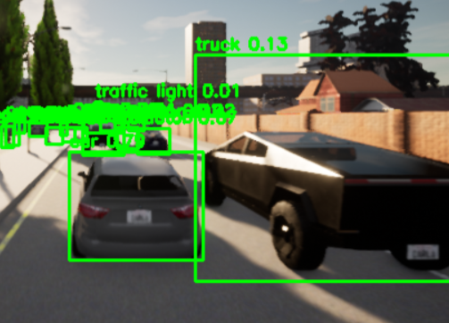

Designed and evaluated an end-to-end intelligent traffic monitoring system using YOLOv8 object detection and LiDAR fusion within the CARLA simulation environment. Engineered deep learning models to predict real-time vehicle congestion patterns and dynamically adjust signal durations. Developed automated alert pipelines with integrated voice and SMS notification APIs for critical incident responses. The research was published and presented at the international conference ICISCoIS 2026 at PSG College of Technology.